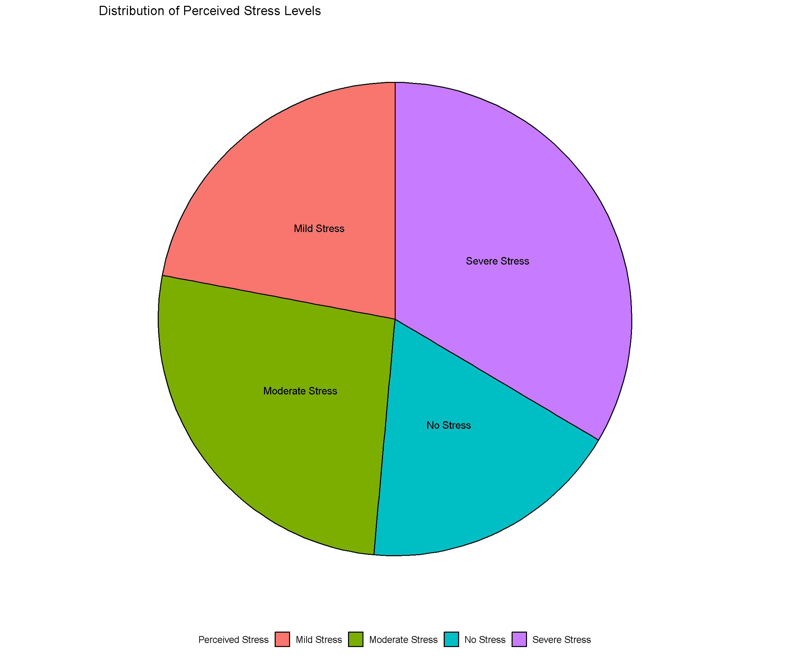
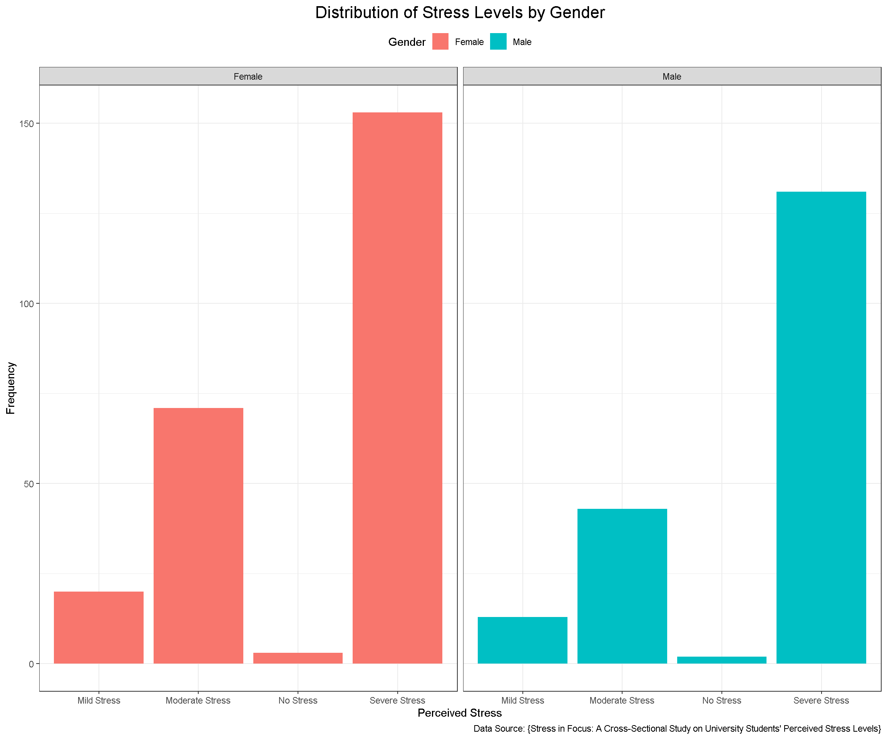
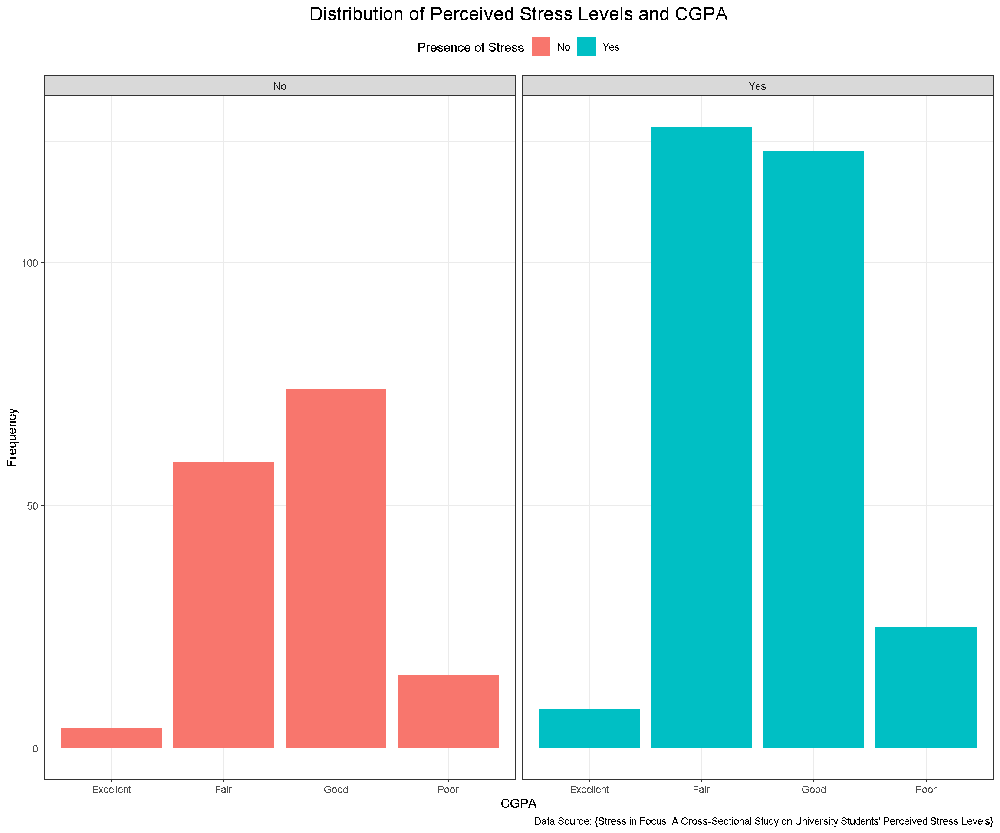
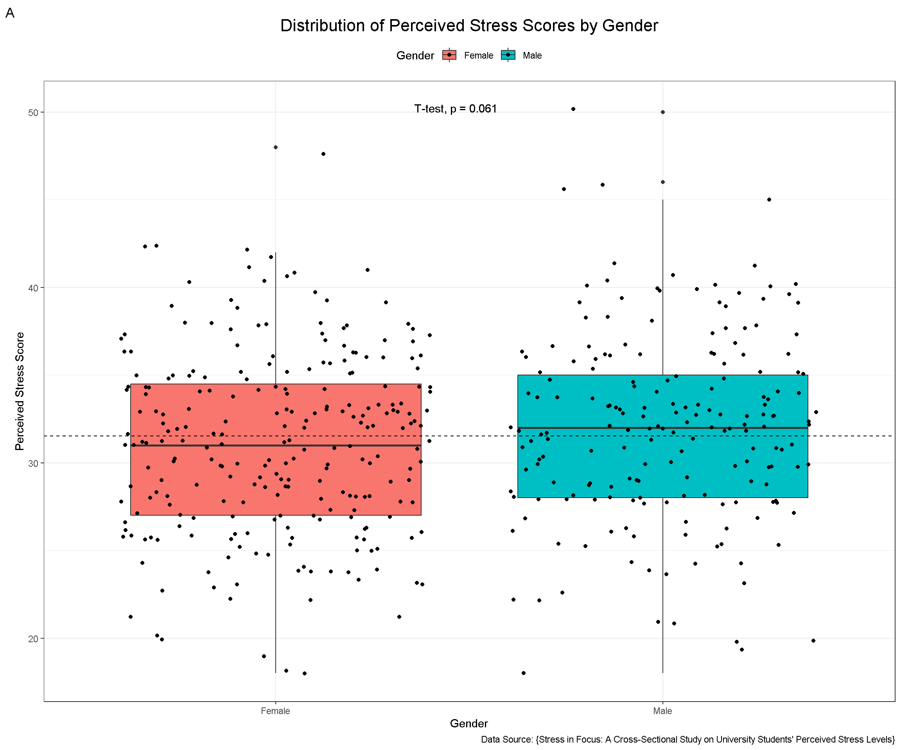
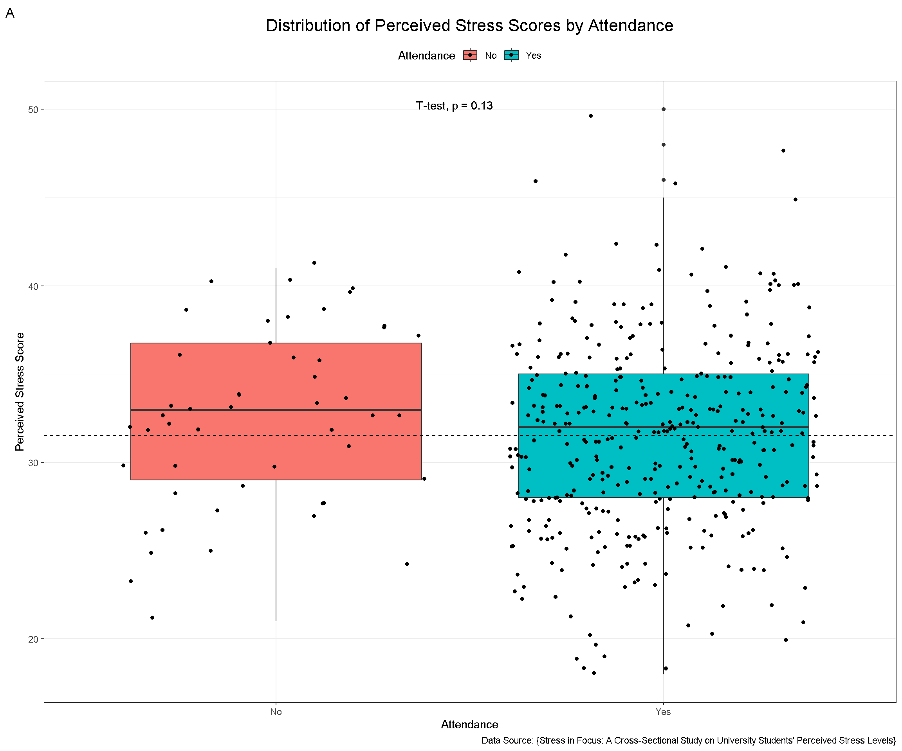
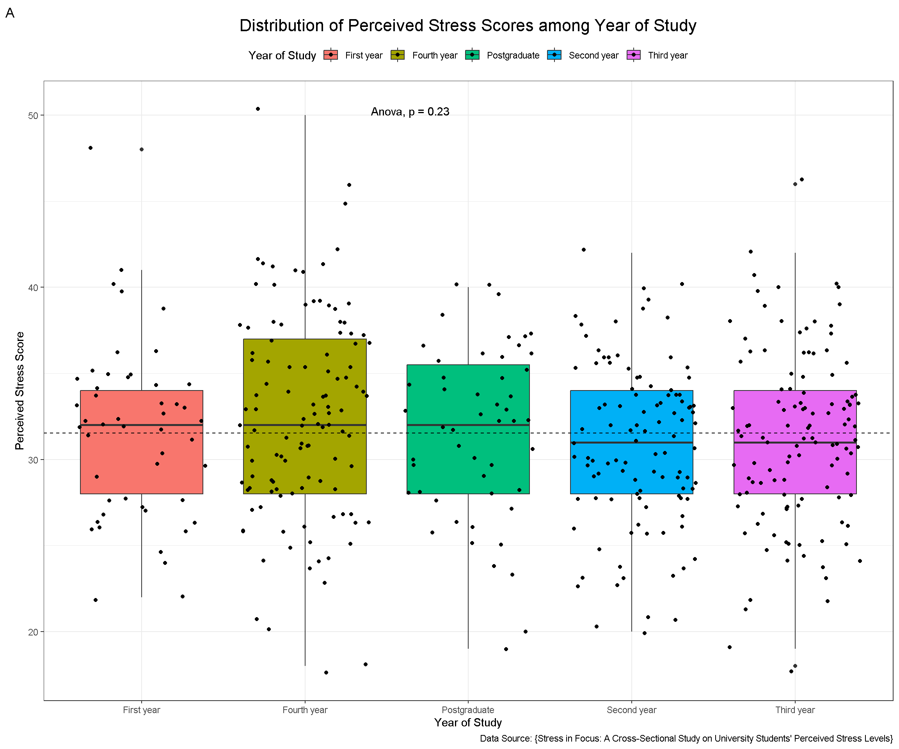
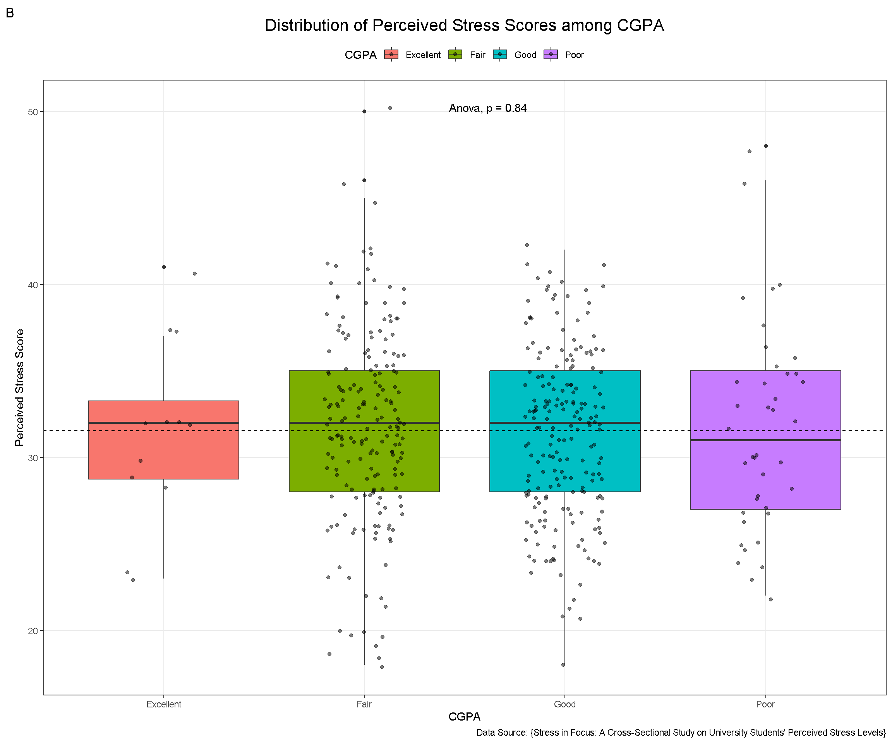
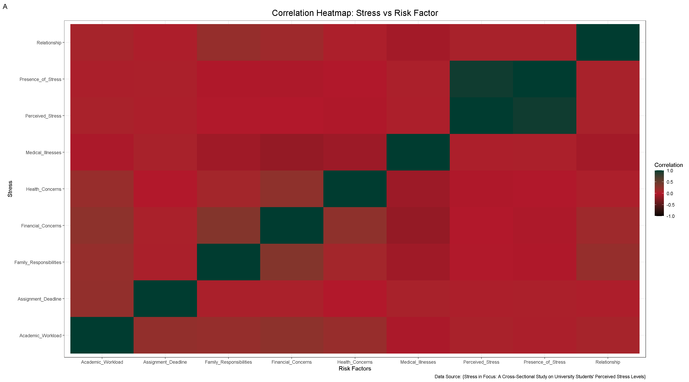
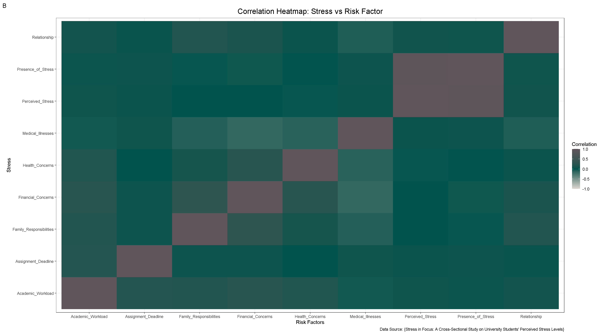
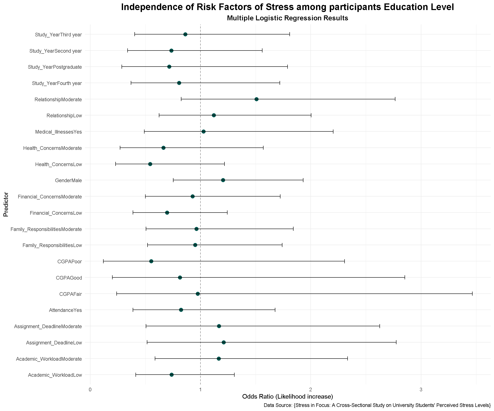

library(tidyverse)
library(gtsummary)
library(gt)
library(gridExtra)
library(cowplot)
library(ggpubr)
library(naniar)
library(broom)Stress in Focus: A Cross-Sectional Study on University Students’ Perceived Stress Levels
Abstract
Objective:
This cross-sectional study quantifies the prevalence of perceived psychological distress among students at the University of Chittagong and examines demographic and academic factors associated with elevated stress.
Methods:
Data were collected from a representative student sample using the Kessler Psychological Distress Scale (K10) and a structured questionnaire; analyses included descriptive statistics, chi-square tests, and multivariable logistic regression.
Results:
A substantial proportion of students reported elevated distress with clear associations between stress and year of study, academic performance (CGPA), class attendance, workload, financial concerns, relationship issues, family responsibilities, and diagnosed medical illness. Multivariable modeling identified fourth-year status, poor CGPA, relationship issues, family responsibilities, and diagnosed medical illness. Multivariable modeling identified fourth-year status, poor CGPA, relationship issues, family responsibilities, and diagnosed disease as independent predictors.
Conclusion:
Conclusion: The findings suggest an urgent need for targeted, culturally sensitive mental health interventions at the university level to mitigate stress and promote academic success.
Keywords:
perceived stress; university students; Kessler K10; prevalence; academic stress.
1. Introduction
Perceived psychological distress among university students is a pervasive public-health concern with well-documented implications for academic performance, physical health, and long-term well-being. University students face a complex interplay of academic workload, financial pressures, social transitions, and personal responsibilities that can elevate stress to clinically meaningful levels. International evidence highlights heterogeneous prevalence estimates and identifies academic performance, year of study, and socio-economic factors as consistent correlates of distress. This study documents the prevalence and correlates of perceived stress at the University of Chittagong and aims to inform institution-level strategies for prevention and support.
2. Objectives
To estimate the prevalence of perceived psychological distress among students at the University of Chittagong.
To identify demographic, academic, and health-related risk factors associated with elevated distress.
To provide evidence-based recommendations for targeted mental-health interventions within the university setting.
3. Materials and Methods
3.1 Study design and population
This cross-sectional study surveyed undergraduate and postgraduate students enrolled at the University of Chittagong. A sample size was calculated to detect prevalence with 95% confidence and allowance for non-response; the final analytic sample comprised respondents who completed the K10 and the study questionnaire.
3.2 Instruments and measures
Perceived psychological distress was measured using the validated Kessler 10 (K10) psychological distress scale. K10 scores were categorized as: no stress (<20), mild (20–24), moderate (25–29), and severe (30–50). Other study variables included sociodemographic factors (age, gender, year of study), academic indicators (CGPA, attendance), and contextual stressors (academic workload, financial concerns, relationship issues, family responsibilities, assignment/thesis pressure, and health concerns). Operational definitions are provided for each variable.
3.3 Data collection
Data were collected using an online bilingual (Bengali/English) self-administered questionnaire deployed via KoboToolbox between June 7 and July 3, 2024. A pilot test (n = 40) preceded the main survey to validate comprehension and timing; minor wording adjustments were made based on pilot feedback. Participation was voluntary and anonymous.
3.4 Statistical analysis
Data cleaning and descriptive statistics (means, standard deviations, frequencies, and percentages) were performed before inferential analyses. Bivariate associations were evaluated with Pearson’s chi-square tests and t-tests where appropriate. Variables associated with stress in bivariate testing were considered for multivariable logistic regression to estimate adjusted odds ratios (ORs) with 95% confidence intervals (CIs). Statistical significance was set at p < 0.05. Specify the software and version you used (e.g., R version 4.5.2)
3.5 Ethical considerations
Although formal IRB approval was not obtained before data collection, the study adhered to accepted ethical principles: informed consent was obtained verbally, participation was voluntary, responses were anonymous, and data were used solely for research purposes. Include your institution’s retrospective ethics statement or IRB approval if obtained subsequently.
4. Results
4.1 Load Packages
Here, we use some packages for our work.
4.2 Load Data
To handle missing data in our dataset, we first load the dataset and check for missing values using appropriate functions. Then, apply necessary coding and modifications to ensure the dataset is clean and ready for analysis. (echo & eval = false)
4.3 Tables
Table 1. Demographic characteristics of the study participants (N=436)
Stress <- read.csv("../data/Stress_in_Focus.csv")
Stress |>
select(2, 3, 5, 6, 7, 8) |>
tbl_summary(statistic = "Age" ~ "{mean} ± ({sd})")| Characteristic | N = 4361 |
|---|---|
| Age | 23 ± (2) |
| Gender | |
| Female | 247 (57%) |
| Male | 189 (43%) |
| Study_Year | |
| First year | 49 (11%) |
| Fourth year | 113 (26%) |
| Postgraduate | 51 (12%) |
| Second year | 105 (24%) |
| Third year | 118 (27%) |
| CGPA | |
| Excellent | 12 (2.8%) |
| Fair | 187 (43%) |
| Good | 197 (45%) |
| Poor | 40 (9.2%) |
| Satisfaction | |
| Neither satisfied nor dissatisfied | 167 (38%) |
| Somewhat dissatisfied | 51 (12%) |
| Somewhat satisfied | 140 (32%) |
| Very dissatisfied | 39 (8.9%) |
| Very satisfied | 39 (8.9%) |
| Attendance | 386 (89%) |
| 1 Mean ± (SD); n (%) | |
Table 2. Stress Levels and Health Concerns among the study participants (N=436)
Stress <- read.csv("../data/Stress40variables.csv")
Stress |>
select(Perceived_Stress, 25:27) |>
tbl_summary(type = all_categorical() ~ "categorical")| Characteristic | N = 4361 |
|---|---|
| Perceived_Stress | |
| Mild Stress | 33 (7.6%) |
| Moderate Stress | 114 (26%) |
| No Stress | 5 (1.1%) |
| Severe Stress | 284 (65%) |
| Medical_Illnesses | |
| No | 380 (87%) |
| Yes | 56 (13%) |
| Medical_Symptoms | |
| No | 355 (81%) |
| Yes | 81 (19%) |
| Severity | |
| Mild symptoms | 36 (8.3%) |
| Moderate symptoms | 44 (10%) |
| No Symptoms | 355 (81%) |
| Severe symptoms | 1 (0.2%) |
| 1 n (%) | |
Table 3. Association between Stress and Study Variables among participants Education Level (N=436)
Stress <- read.csv("../data/Stress40variables.csv")
Stress |>
select(Perceived_Stress, 3, 5, 6, 8) |>
tbl_summary(by = Perceived_Stress,
type = all_categorical() ~ "categorical") |>
add_overall() |>
add_p(test.args = all_tests("fisher.test") ~ list(workspace = 2e9)) |>
bold_p(t = 0.05)| Characteristic | Overall N = 4361 |
Mild Stress N = 331 |
Moderate Stress N = 1141 |
No Stress N = 51 |
Severe Stress N = 2841 |
p-value2 |
|---|---|---|---|---|---|---|
| Gender | 0.5 | |||||
| Female | 247 (57%) | 20 (61%) | 71 (62%) | 3 (60%) | 153 (54%) | |
| Male | 189 (43%) | 13 (39%) | 43 (38%) | 2 (40%) | 131 (46%) | |
| Study_Year | >0.9 | |||||
| First year | 49 (11%) | 3 (9.1%) | 13 (11%) | 0 (0%) | 33 (12%) | |
| Fourth year | 113 (26%) | 7 (21%) | 28 (25%) | 2 (40%) | 76 (27%) | |
| Postgraduate | 51 (12%) | 3 (9.1%) | 12 (11%) | 1 (20%) | 35 (12%) | |
| Second year | 105 (24%) | 12 (36%) | 30 (26%) | 0 (0%) | 63 (22%) | |
| Third year | 118 (27%) | 8 (24%) | 31 (27%) | 2 (40%) | 77 (27%) | |
| CGPA | 0.6 | |||||
| Excellent | 12 (2.8%) | 2 (6.1%) | 2 (1.8%) | 0 (0%) | 8 (2.8%) | |
| Fair | 187 (43%) | 11 (33%) | 44 (39%) | 4 (80%) | 128 (45%) | |
| Good | 197 (45%) | 16 (48%) | 57 (50%) | 1 (20%) | 123 (43%) | |
| Poor | 40 (9.2%) | 4 (12%) | 11 (9.6%) | 0 (0%) | 25 (8.8%) | |
| Attendance | 0.8 | |||||
| No | 50 (11%) | 3 (9.1%) | 11 (9.6%) | 0 (0%) | 36 (13%) | |
| Yes | 386 (89%) | 30 (91%) | 103 (90%) | 5 (100%) | 248 (87%) | |
| 1 n (%) | ||||||
| 2 Fisher’s exact test | ||||||
Table 4. Association between Stress and Study Variables among participants Education Level (N=436) (Binary options)
Stress <- read.csv("../data/Stress40variables.csv")
Stress |>
select(Presence_of_Stress, 3, 5, 6, 8) |>
tbl_summary(by = Presence_of_Stress,
type = all_categorical() ~ "categorical") |>
add_overall() |>
add_p(test.args = all_tests("fisher.test") ~ list(workspace = 2e9)) |>
bold_p(t = 0.05)| Characteristic | Overall N = 4361 |
No N = 1521 |
Yes N = 2841 |
p-value2 |
|---|---|---|---|---|
| Gender | 0.11 | |||
| Female | 247 (57%) | 94 (62%) | 153 (54%) | |
| Male | 189 (43%) | 58 (38%) | 131 (46%) | |
| Study_Year | 0.8 | |||
| First year | 49 (11%) | 16 (11%) | 33 (12%) | |
| Fourth year | 113 (26%) | 37 (24%) | 76 (27%) | |
| Postgraduate | 51 (12%) | 16 (11%) | 35 (12%) | |
| Second year | 105 (24%) | 42 (28%) | 63 (22%) | |
| Third year | 118 (27%) | 41 (27%) | 77 (27%) | |
| CGPA | 0.6 | |||
| Excellent | 12 (2.8%) | 4 (2.6%) | 8 (2.8%) | |
| Fair | 187 (43%) | 59 (39%) | 128 (45%) | |
| Good | 197 (45%) | 74 (49%) | 123 (43%) | |
| Poor | 40 (9.2%) | 15 (9.9%) | 25 (8.8%) | |
| Attendance | 0.3 | |||
| No | 50 (11%) | 14 (9.2%) | 36 (13%) | |
| Yes | 386 (89%) | 138 (91%) | 248 (87%) | |
| 1 n (%) | ||||
| 2 Pearson’s Chi-squared test; Fisher’s exact test | ||||
Table 5. Association between Stress and Risk Factors among participants Education Level (N=436)
Stress <- read.csv("../data/Stress40variables.csv")
Stress |>
select(Perceived_Stress, 19:25) |>
tbl_summary(by = Perceived_Stress,
type = all_categorical() ~ "categorical") |>
add_overall() |>
add_p() |>
bold_p(t = 0.05)| Characteristic | Overall N = 4361 |
Mild Stress N = 331 |
Moderate Stress N = 1141 |
No Stress N = 51 |
Severe Stress N = 2841 |
p-value2 |
|---|---|---|---|---|---|---|
| Academic_Workload | 0.026 | |||||
| High | 120 (28%) | 14 (42%) | 24 (21%) | 1 (20%) | 81 (29%) | |
| Low | 220 (50%) | 15 (45%) | 70 (61%) | 4 (80%) | 131 (46%) | |
| Moderate | 96 (22%) | 4 (12%) | 20 (18%) | 0 (0%) | 72 (25%) | |
| Financial_Concerns | 0.023 | |||||
| High | 151 (35%) | 15 (45%) | 29 (25%) | 0 (0%) | 107 (38%) | |
| Low | 173 (40%) | 13 (39%) | 57 (50%) | 3 (60%) | 100 (35%) | |
| Moderate | 112 (26%) | 5 (15%) | 28 (25%) | 2 (40%) | 77 (27%) | |
| Relationship | 0.3 | |||||
| High | 101 (23%) | 9 (27%) | 25 (22%) | 2 (40%) | 65 (23%) | |
| Low | 209 (48%) | 17 (52%) | 63 (55%) | 1 (20%) | 128 (45%) | |
| Moderate | 126 (29%) | 7 (21%) | 26 (23%) | 2 (40%) | 91 (32%) | |
| Family_Responsibilities | 0.033 | |||||
| High | 127 (29%) | 14 (42%) | 24 (21%) | 0 (0%) | 89 (31%) | |
| Low | 211 (48%) | 13 (39%) | 66 (58%) | 5 (100%) | 127 (45%) | |
| Moderate | 98 (22%) | 6 (18%) | 24 (21%) | 0 (0%) | 68 (24%) | |
| Assignment_Deadline | 0.3 | |||||
| High | 43 (9.9%) | 4 (12%) | 9 (7.9%) | 0 (0%) | 30 (11%) | |
| Low | 284 (65%) | 20 (61%) | 84 (74%) | 5 (100%) | 175 (62%) | |
| Moderate | 109 (25%) | 9 (27%) | 21 (18%) | 0 (0%) | 79 (28%) | |
| Health_Concerns | 0.2 | |||||
| High | 51 (12%) | 2 (6.1%) | 9 (7.9%) | 1 (20%) | 39 (14%) | |
| Low | 301 (69%) | 24 (73%) | 89 (78%) | 3 (60%) | 185 (65%) | |
| Moderate | 84 (19%) | 7 (21%) | 16 (14%) | 1 (20%) | 60 (21%) | |
| Medical_Illnesses | 0.4 | |||||
| No | 380 (87%) | 28 (85%) | 104 (91%) | 4 (80%) | 244 (86%) | |
| Yes | 56 (13%) | 5 (15%) | 10 (8.8%) | 1 (20%) | 40 (14%) | |
| 1 n (%) | ||||||
| 2 Fisher’s exact test | ||||||
Table 6. Association between Stress and Risk Factors among participants Education Level (N=436) (Binary options)
Stress <- read.csv("../data/Stress40variables.csv")
Stress |>
select(Presence_of_Stress, 19:25) |>
tbl_summary(by = Presence_of_Stress,
type = all_categorical() ~ "categorical") |>
add_overall() |>
add_p() |>
bold_p(t = 0.05)| Characteristic | Overall N = 4361 |
No N = 1521 |
Yes N = 2841 |
p-value2 |
|---|---|---|---|---|
| Academic_Workload | 0.024 | |||
| High | 120 (28%) | 39 (26%) | 81 (29%) | |
| Low | 220 (50%) | 89 (59%) | 131 (46%) | |
| Moderate | 96 (22%) | 24 (16%) | 72 (25%) | |
| Financial_Concerns | 0.031 | |||
| High | 151 (35%) | 44 (29%) | 107 (38%) | |
| Low | 173 (40%) | 73 (48%) | 100 (35%) | |
| Moderate | 112 (26%) | 35 (23%) | 77 (27%) | |
| Relationship | 0.12 | |||
| High | 101 (23%) | 36 (24%) | 65 (23%) | |
| Low | 209 (48%) | 81 (53%) | 128 (45%) | |
| Moderate | 126 (29%) | 35 (23%) | 91 (32%) | |
| Family_Responsibilities | 0.11 | |||
| High | 127 (29%) | 38 (25%) | 89 (31%) | |
| Low | 211 (48%) | 84 (55%) | 127 (45%) | |
| Moderate | 98 (22%) | 30 (20%) | 68 (24%) | |
| Assignment_Deadline | 0.10 | |||
| High | 43 (9.9%) | 13 (8.6%) | 30 (11%) | |
| Low | 284 (65%) | 109 (72%) | 175 (62%) | |
| Moderate | 109 (25%) | 30 (20%) | 79 (28%) | |
| Health_Concerns | 0.046 | |||
| High | 51 (12%) | 12 (7.9%) | 39 (14%) | |
| Low | 301 (69%) | 116 (76%) | 185 (65%) | |
| Moderate | 84 (19%) | 24 (16%) | 60 (21%) | |
| Medical_Illnesses | 0.3 | |||
| No | 380 (87%) | 136 (89%) | 244 (86%) | |
| Yes | 56 (13%) | 16 (11%) | 40 (14%) | |
| 1 n (%) | ||||
| 2 Pearson’s Chi-squared test | ||||
Table 7. Independence of Risk Factors of Stress among participants Education Level (N=436) (Binary options, 4 =>2)
Stress <- read.csv("../data/Stress_Perceived_Stress_Binary.csv")
Stress |>
select(has_Stress, Gender,
Study_Year, CGPA, Attendance,
Academic_Workload, Financial_Concerns,
Relationship, Family_Responsibilities,
Assignment_Deadline, Health_Concerns,
Medical_Illnesses) |>
tbl_uvregression(
method = glm,
y = has_Stress,
method.args = list(family = binomial), # Linear => `gaussian`, # Logistic => `binomial`
exponentiate = TRUE,
pvalue_fun = ~style_pvalue(.x, digits = 2)) |>
bold_p(t = 0.05) | Characteristic | N | OR | 95% CI | p-value |
|---|---|---|---|---|
| Gender | 436 | |||
| Female | — | — | ||
| Male | 1.39 | 0.93, 2.08 | 0.11 | |
| Study_Year | 436 | |||
| First year | — | — | ||
| Fourth year | 1.00 | 0.48, 2.02 | >0.99 | |
| Postgraduate | 1.06 | 0.46, 2.47 | 0.89 | |
| Second year | 0.73 | 0.35, 1.47 | 0.38 | |
| Third year | 0.91 | 0.44, 1.83 | 0.80 | |
| CGPA | 436 | |||
| Excellent | — | — | ||
| Fair | 1.08 | 0.28, 3.59 | 0.90 | |
| Good | 0.83 | 0.22, 2.73 | 0.77 | |
| Poor | 0.83 | 0.20, 3.14 | 0.79 | |
| Attendance | 436 | |||
| No | — | — | ||
| Yes | 0.70 | 0.35, 1.31 | 0.28 | |
| Academic_Workload | 436 | |||
| High | — | — | ||
| Low | 0.71 | 0.44, 1.13 | 0.15 | |
| Moderate | 1.44 | 0.80, 2.65 | 0.23 | |
| Financial_Concerns | 436 | |||
| High | — | — | ||
| Low | 0.56 | 0.35, 0.89 | 0.015 | |
| Moderate | 0.90 | 0.53, 1.54 | 0.71 | |
| Relationship | 436 | |||
| High | — | — | ||
| Low | 0.88 | 0.53, 1.43 | 0.60 | |
| Moderate | 1.44 | 0.82, 2.54 | 0.20 | |
| Family_Responsibilities | 436 | |||
| High | — | — | ||
| Low | 0.65 | 0.40, 1.03 | 0.068 | |
| Moderate | 0.97 | 0.55, 1.72 | 0.91 | |
| Assignment_Deadline | 436 | |||
| High | — | — | ||
| Low | 0.70 | 0.34, 1.37 | 0.31 | |
| Moderate | 1.14 | 0.51, 2.45 | 0.74 | |
| Health_Concerns | 436 | |||
| High | — | — | ||
| Low | 0.49 | 0.24, 0.95 | 0.042 | |
| Moderate | 0.77 | 0.34, 1.69 | 0.52 | |
| Medical_Illnesses | 436 | |||
| No | — | — | ||
| Yes | 1.39 | 0.77, 2.65 | 0.29 | |
| Abbreviations: CI = Confidence Interval, OR = Odds Ratio | ||||
Table 7. Independence of Risk Factors of Stress among participants Education Level (N=436) (Binary options)
Stress <- read.csv("../data/Stress_Presence_of_Stress_Binary.csv")
Stress |>
select(Gender, Study_Year, CGPA, Attendance,
Academic_Workload, Financial_Concerns,
Relationship, Family_Responsibilities,
Assignment_Deadline, Health_Concerns,
Medical_Illnesses, has_Stress) |>
tbl_uvregression(
method = glm,
y = has_Stress,
method.args = list(family = binomial), # Linear => `gaussian`, # Logistic => `binomial`
exponentiate = TRUE,
pvalue_fun = ~style_pvalue(.x, digits = 2)) |>
bold_p(t = 0.05) | Characteristic | N | OR | 95% CI | p-value |
|---|---|---|---|---|
| Gender | 436 | |||
| Female | — | — | ||
| Male | 1.39 | 0.93, 2.08 | 0.11 | |
| Study_Year | 436 | |||
| First year | — | — | ||
| Fourth year | 1.00 | 0.48, 2.02 | >0.99 | |
| Postgraduate | 1.06 | 0.46, 2.47 | 0.89 | |
| Second year | 0.73 | 0.35, 1.47 | 0.38 | |
| Third year | 0.91 | 0.44, 1.83 | 0.80 | |
| CGPA | 436 | |||
| Excellent | — | — | ||
| Fair | 1.08 | 0.28, 3.59 | 0.90 | |
| Good | 0.83 | 0.22, 2.73 | 0.77 | |
| Poor | 0.83 | 0.20, 3.14 | 0.79 | |
| Attendance | 436 | |||
| No | — | — | ||
| Yes | 0.70 | 0.35, 1.31 | 0.28 | |
| Academic_Workload | 436 | |||
| High | — | — | ||
| Low | 0.71 | 0.44, 1.13 | 0.15 | |
| Moderate | 1.44 | 0.80, 2.65 | 0.23 | |
| Financial_Concerns | 436 | |||
| High | — | — | ||
| Low | 0.56 | 0.35, 0.89 | 0.015 | |
| Moderate | 0.90 | 0.53, 1.54 | 0.71 | |
| Relationship | 436 | |||
| High | — | — | ||
| Low | 0.88 | 0.53, 1.43 | 0.60 | |
| Moderate | 1.44 | 0.82, 2.54 | 0.20 | |
| Family_Responsibilities | 436 | |||
| High | — | — | ||
| Low | 0.65 | 0.40, 1.03 | 0.068 | |
| Moderate | 0.97 | 0.55, 1.72 | 0.91 | |
| Assignment_Deadline | 436 | |||
| High | — | — | ||
| Low | 0.70 | 0.34, 1.37 | 0.31 | |
| Moderate | 1.14 | 0.51, 2.45 | 0.74 | |
| Health_Concerns | 436 | |||
| High | — | — | ||
| Low | 0.49 | 0.24, 0.95 | 0.042 | |
| Moderate | 0.77 | 0.34, 1.69 | 0.52 | |
| Medical_Illnesses | 436 | |||
| No | — | — | ||
| Yes | 1.39 | 0.77, 2.65 | 0.29 | |
| Abbreviations: CI = Confidence Interval, OR = Odds Ratio | ||||
4.4 Figures for Visualization
Figure 1. Distribution of Perceived Stress Levels
Stress <- read.csv("../data/Stress40variables.csv")
Stress1 <- Stress |>
group_by(Perceived_Stress) |>
summarize(AvgStress = round(mean(Perceived_stress_score), 2))
ggpie(Stress1, "AvgStress","Perceived_Stress",
fill = "Perceived_Stress",
lab.pos = c("in"),
lab.font = c(4, "plain", "black"),
legend = "bottom",
legend.title = "Perceived Stress",
font.legend = c(10, "plain", "black"),
ticks = T,
main = "Distribution of Perceived Stress Levels")

Figure 2. Distribution of Perceived Stress Levels by Gender
Stress <- read.csv("../data/Stress40variables.csv")
Stress2 <- Stress |>
group_by(Perceived_Stress) |>
count(Gender)
ggplot(Stress2,
aes(x = Perceived_Stress, y = n,
fill = Gender)) +
geom_col() +
scale_color_viridis_c() +
facet_wrap(vars(Gender), nrow = 1) +
labs(x = "Perceived Stress",
y = "Frequency",
title = "Distribution of Stress Levels by Gender",
caption = "Data Source: {Stress in Focus: A Cross-Sectional Study on University Students' Perceived Stress Levels}") +
theme_bw() +
theme(plot.title = element_text(size = 16,
hjust = 0.5),
legend.position = "top")

Figure 3. Distribution of Perceived Stress Levels in Each Year of Study
Stress <- read.csv("../data/Stress40variables.csv")
Stress3 <- Stress |>
group_by(Perceived_Stress) |>
count(Study_Year)
ggplot(Stress3,
aes(x = Perceived_Stress, y = n,
fill = Study_Year)) +
geom_col() +
scale_color_viridis_c() +
scale_fill_discrete(name = "Year of Study") +
facet_wrap(vars(Study_Year), nrow = 2) +
labs(x = "Perceived Stress",
y = "Frequency",
title = "Distribution of Perceived Stress Levels in Each Year of Study",
caption = "Data Source: {Stress in Focus: A Cross-Sectional Study on University Students' Perceived Stress Levels}") +
theme_bw() +
theme(plot.title = element_text(size = 16,
hjust = 0.5),
legend.position = "top")
Figure 4. Distribution of Perceived Stress Levels among Ages with Mean Scores
Stress <- read.csv("../data/Stress40variables.csv")
Stress4 <- Stress |>
group_by(Perceived_Stress) |>
count(Age)
ggplot(Stress4,
aes(x = Age, y = n,
fill = Perceived_Stress)) +
geom_col() +
scale_color_viridis_d() +
scale_fill_discrete(name = "Perceived Stress") +
facet_wrap(vars(Perceived_Stress), ncol = 2) +
labs(x = "Age",
y = "Frequency",
title = "Distribution of Perceived Stress Levels among Ages",
subtitle = "Distribution of Stress with Mean Perceived Stress Scores",
caption = "Data Source: {Stress in Focus: A Cross-Sectional Study on University Students' Perceived Stress Levels}") +
geom_hline(yintercept = mean(Stress$Perceived_stress_score), linetype = 4) +
theme_bw() +
theme(plot.title = element_text(size = 16,
hjust = 0.5),
legend.position = "top")
Figure 5. Distribution of CGPA and Perceived Stress Levels
Stress <- read.csv("../data/Stress40variables.csv")
Stress5 <- Stress |>
group_by(Presence_of_Stress) |>
count(CGPA)
ggplot(Stress5,
aes(x = CGPA, y = n,
fill = Presence_of_Stress)) +
geom_col() +
scale_color_viridis_d() +
scale_fill_discrete(name = "Presence of Stress") +
facet_wrap(vars(Presence_of_Stress), ncol = 2) +
labs(x = "CGPA",
y = "Frequency",
title = "Distribution of Perceived Stress Levels and CGPA",
caption = "Data Source: {Stress in Focus: A Cross-Sectional Study on University Students' Perceived Stress Levels}") +
theme_bw() +
theme(plot.title = element_text(size = 16,
hjust = 0.5),
legend.position = "top")

Figure 6. Density Plot of Perceived Stress Scores
Stress <- read.csv("../data/Stress40variables.csv")
ggplot(Stress,
aes(x = Perceived_stress_score,
fill = Perceived_Stress)) +
geom_density() +
scale_color_viridis_d() +
scale_fill_discrete(name = "Perceived Stress") +
facet_wrap(vars(Perceived_Stress), ncol = 2) +
labs(x = "Perceived Stress Score",
y = "Density",
title = "Density Plot of Perceived Stress Scores",
caption = "Data Source: {Stress in Focus: A Cross-Sectional Study on University Students' Perceived Stress Levels}") +
theme_bw() +
theme(plot.title = element_text(size = 16,
hjust = 0.5),
legend.position = "top")
Figure 7. Distribution of Perceived Stress Scores by Gender
Stress <- read.csv("../data/Stress40variables.csv")
ggplot(Stress,
aes(x = Gender, y = Perceived_stress_score,
fill = Gender)) +
geom_boxplot() +
geom_jitter() +
scale_color_viridis_d() +
scale_fill_discrete(name = "Gender") +
labs(x = "Gender",
y = "Perceived Stress Score",
title = "Distribution of Perceived Stress Scores by Gender",
caption = "Data Source: {Stress in Focus: A Cross-Sectional Study on University Students' Perceived Stress Levels}",
tag = "A") +
geom_hline(yintercept = mean(Stress$Perceived_stress_score), linetype = 2) +
stat_compare_means(label.x = 1.4, method = "t.test") +
theme_bw() +
theme(plot.title = element_text(size = 16,
hjust = 0.5),
legend.position = "top")

Figure 8. Distribution of Perceived Stress Scores by Attendance
Stress <- read.csv("../data/Stress40variables.csv")
ggplot(Stress,
aes(x = Attendance, y = Perceived_stress_score,
fill = Attendance)) +
geom_boxplot() +
geom_jitter() +
scale_color_viridis_d() +
scale_fill_discrete(name = "Attendance") +
labs(x = "Attendance",
y = "Perceived Stress Score",
title = "Distribution of Perceived Stress Scores by Attendance",
caption = "Data Source: {Stress in Focus: A Cross-Sectional Study on University Students' Perceived Stress Levels}",
tag = "A") +
geom_hline(yintercept = mean(Stress$Perceived_stress_score), linetype = 2) +
stat_compare_means(label.x = 1.4, method = "t.test") +
theme_bw() +
theme(plot.title = element_text(size = 16,
hjust = 0.5),
legend.position = "top")

Figure 9. Distribution of Perceived Stress Scores among Year of Study
Stress <- read.csv("../data/Stress40variables.csv")
p1 <- ggplot(Stress,
aes(x = Study_Year, y = Perceived_stress_score,
fill = Study_Year)) +
geom_boxplot() +
geom_jitter() +
scale_color_viridis_d() +
scale_fill_discrete(name = "Year of Study") +
labs(x = "Year of Study",
y = "Perceived Stress Score",
title = "Distribution of Perceived Stress Scores among Year of Study",
caption = "Data Source: {Stress in Focus: A Cross-Sectional Study on University Students' Perceived Stress Levels}",
tag = "A") +
geom_hline(yintercept = mean(Stress$Perceived_stress_score), linetype = 2) +
stat_compare_means(label.x = 2.5, method = "anova") +
theme_bw() +
theme(plot.title = element_text(size = 16,
hjust = 0.5),
legend.position = "top")
p1

Figure 10. Distribution of Perceived Stress Scores among CGPA
Stress <- read.csv("../data/Stress40variables.csv")
p2 <- ggplot(Stress,
aes(x = CGPA, y = Perceived_stress_score,
fill = CGPA)) +
geom_boxplot() +
geom_jitter(width = 0.2, alpha = 0.5) +
scale_color_viridis_d() +
scale_fill_discrete(name = "CGPA") +
labs(x = "CGPA",
y = "Perceived Stress Score",
title = "Distribution of Perceived Stress Scores among CGPA",
caption = "Data Source: {Stress in Focus: A Cross-Sectional Study on University Students' Perceived Stress Levels}",
tag = "B") +
geom_hline(yintercept = mean(Stress$Perceived_stress_score), linetype = 2) +
stat_compare_means(label.x = 2.5, method = "anova") +
theme_bw() +
theme(plot.title = element_text(size = 16,
hjust = 0.5),
legend.position = "top")
p2

Figure 11. Distribution of Perceived Stress Scores among Year of Study vs CGPA Combined
Figure 12. Correlation Heatmap: Stress vs Risk Factor
Stress6 <- read.csv("../data/Stress6_heatmap.csv")
Stress6cor <- cor(Stress6, use = "all.obs")
Stress6cor_df <-
as.data.frame(Stress6cor) |>
rownames_to_column("Stress_F") |>
pivot_longer(-Stress_F,
names_to = "Risk_Factor",
values_to = "Correlation")
ggplot(Stress6cor_df,
aes(x = Risk_Factor, y = Stress_F,
fill = Correlation)) +
geom_tile() +
scale_fill_gradient2(low = "#000000",
mid = "#b2182b",
high = "#003c30",
name = "Correlation",
midpoint = 0,
limit = c(-1, 1)) +
labs(x = "Risk Factors",
y = "Stress",
title = "Correlation Heatmap: Stress vs Risk Factor",
caption = "Data Source: {Stress in Focus: A Cross-Sectional Study on University Students' Perceived Stress Levels}",
tag = "A") +
theme_bw() +
theme(plot.title = element_text(size = 16,
hjust = 0.5)
)

Figure 13. Correlation Heatmap: Stress vs Risk Factor (Another)
Stress7 <- read.csv("../data/Stress6_heatmap.csv")
Stress7cor <- cor(Stress7, use = "all.obs")
Stress7cor_df <-
as.data.frame(Stress7cor) |>
rownames_to_column("Stress_F") |>
pivot_longer(-Stress_F,
names_to = "Risk_Factor",
values_to = "Correlation")
ggplot(Stress7cor_df,
aes(x = Risk_Factor, y = Stress_F,
fill = Correlation)) +
geom_tile() +
scale_fill_gradient2(low = "#dfd8d2",
mid = "#00544d",
high = "#5f555a",
name = "Correlation",
midpoint = 0,
limit = c(-1, 1)) +
labs(x = "Risk Factors",
y = "Stress",
title = "Correlation Heatmap: Stress vs Risk Factor",
caption = "Data Source: {Stress in Focus: A Cross-Sectional Study on University Students' Perceived Stress Levels}",
tag = "B") +
theme_bw() +
theme(plot.title = element_text(size = 16,
hjust = 0.5))

Figure 14. Independence of Risk Factors of Stress among participants Education Level (in case of => Presence_of_Stress)
Stress <- read.csv("../data/Logistic_Regression.csv")
# Fit the model
model1 <- glm(has_Stress ~ Gender +
Study_Year + CGPA + Attendance +
Academic_Workload + Financial_Concerns +
Relationship + Family_Responsibilities +
Assignment_Deadline + Health_Concerns +
Medical_Illnesses,
data = Stress,
family = "binomial")
# Calculate odds ratio
tidymodel1 <- tidy(model1, conf.int = TRUE,
exponentiate = TRUE)
# Visualization with Forest Plot
ggplot(data = tidymodel1 |>
filter(term != "(Intercept)"),
mapping = aes (x = estimate,
y = term)) +
geom_point(size = 3, color = "#00544d") +
geom_vline(xintercept = 1, linetype = "dashed", color = "gray50") +
geom_errorbar(aes(xmin = conf.low,
xmax = conf.high),
width = 0.25) +
labs(x = "Odds Ratio (Likelihood increase)",
y = "Predictor",
title = "Independence of Risk Factors of Stress among participants Education Level",
subtitle = "Multiple Logistic Regression Results",
caption = "Data Source: {Stress in Focus: A Cross-Sectional Study on University Students' Perceived Stress Levels}") +
theme_minimal() +
theme(plot.title = element_text(size = 16,
face = "bold",
hjust = 0.5),
plot.subtitle = element_text(size = 12,
face = "bold",
hjust = 0.5),
legend.position = "top")

Figure 15. Independence of Risk Factors of Stress among participants Education Level (in case of => Perceived_Stress)
Stress <- read.csv("../data/Logit2.csv")
# Fit the model
model2 <- glm(Has_Stress ~ Gender +
Study_Year + CGPA + Attendance +
Academic_Workload + Financial_Concerns +
Relationship + Family_Responsibilities +
Assignment_Deadline + Health_Concerns +
Medical_Illnesses,
data = Stress,
family = "binomial")
# Calculate odds ratio
tidymodel2 <- tidy(model2, conf.int = TRUE,
exponentiate = TRUE)
# Visualization with Forest Plot
ggplot(data = tidymodel2 |>
filter(term != "(Intercept)"),
mapping = aes (x = estimate,
y = term)) +
geom_point(size = 3, color = "#00544d") +
geom_vline(xintercept = 1, linetype = "dashed", color = "gray50") +
geom_errorbar(aes(xmin = conf.low,
xmax = conf.high),
width = 0.25) +
labs(x = "Odds Ratio (Likelihood increase)",
y = "Predictor",
title = "Independence of Risk Factors of Stress among participants Education Level",
subtitle = "Multiple Logistic Regression Results",
caption = "Data Source: {Stress in Focus: A Cross-Sectional Study on University Students' Perceived Stress Levels}") +
theme_bw() +
theme(plot.title = element_text(size = 16,
face = "bold",
hjust = 0.5),
plot.subtitle = element_text(size = 12,
face = "bold",
hjust = 0.5),
legend.position = "top")
Figure 16. Visualization with Forest Plot but xmax => limited to a fixed level
(Not Recommended)
Stress <- read.csv("../data/Logit2.csv")
# Fit the model
model2 <- glm(Has_Stress ~ Gender +
Study_Year + CGPA + Attendance +
Academic_Workload + Financial_Concerns +
Relationship + Family_Responsibilities +
Assignment_Deadline + Health_Concerns +
Medical_Illnesses,
data = Stress,
family = "binomial")
# Calculate odds ratio
tidymodel2 <- tidy(model2, conf.int = TRUE,
exponentiate = TRUE)
# Visualization with Forest Plot
ggplot(data = tidymodel2 |>
filter(term != "(Intercept)"),
mapping = aes (x = estimate,
y = term)) +
geom_point(size = 3, color = "#00544d") +
geom_vline(xintercept = 1, linetype = "dashed", color = "gray50") +
geom_errorbar(aes(xmin = conf.low,
xmax = 5), # Usually, xmax = conf.high
width = 0.25) +
labs(x = "Odds Ratio (Likelihood increase)",
y = "Predictor",
title = "Independence of Risk Factors of Stress among participants Education Level",
subtitle = "Multiple Logistic Regression Results",
caption = "Data Source: {Stress in Focus: A Cross-Sectional Study on University Students' Perceived Stress Levels}") +
theme_bw() +
theme(plot.title = element_text(size = 16,
face = "bold",
hjust = 0.5),
plot.subtitle = element_text(size = 12,
face = "bold",
hjust = 0.5),
legend.position = "top")
Figure 17. Multiple Logistic Regression Model Prediction Probability (in case of => Presence_of_Stress)
Stress <- read.csv("../data/Logistic_Regression.csv")
# Fit the model
model3 <- glm(has_Stress ~ Age + Gender + Study_Year +
Academic_Workload + Financial_Concerns +
Assignment_Deadline + Health_Concerns +
Medical_Illnesses,
data = Stress,
family = "binomial")
# Calculate odds ratio
tidymodel3 <- tidy(model3, conf.int = TRUE,
exponentiate = TRUE)
# Visualization with Predicted Probabilities
# A grid for hypothetical calculation of prediction
hypodata <- expand_grid(
Age = seq(18, 30, by = 0.1),
Gender = "Male",
Study_Year = "Third year",
Academic_Workload = c("Low", "High"), # Spelling have to be same
Financial_Concerns = c("High"),
Assignment_Deadline = c("Moderate"),
Health_Concerns = c("Low"),
Medical_Illnesses = c("No")
)
# Now, Predict the Probabilities
predictdata <- augment(model3,
newdata = hypodata,
type.predict = "response")
ggplot(data = predictdata,
mapping = aes (x = Age,
y = .fitted,
color = Academic_Workload)) +
geom_point(data = Stress |>
filter(Gender == "Male"),
aes(x = Age, y = has_Stress),
size =3,
alpha = 0.4) +
geom_line(linewidth = 2) +
scale_fill_discrete(name = "Academic Workload") +
labs(x = "Age (Years)",
y = "Predicted Probability (0 to 1)",
title = "Multiple Logistic Regression Model Prediction Probability",
subtitle = "Comparing High vs Low Concerns across Ages",
caption = "Dots = Real Student Data | Lines = Model Prediction",
color = "Academic Workload") +
theme_minimal() +
theme(plot.title = element_text(size = 16,
face = "bold",
hjust = 0.5),
plot.subtitle = element_text(size = 12,
face = "bold",
hjust = 0.5),
legend.position = "top")
Figure 18. Multiple Logistic Regression Model Prediction Probability (in case of => Perceived_Stress)
Stress <- read.csv("../data/Logit2.csv")
# Fit the model
model4 <- glm(Has_Stress ~ Age + Gender + Study_Year +
Academic_Workload + Financial_Concerns +
Assignment_Deadline + Health_Concerns +
Medical_Illnesses,
data = Stress,
family = "binomial")
# Calculate odds ratio
tidymodel4 <- tidy(model4, conf.int = TRUE,
exponentiate = TRUE)
# Visualization with Predicted Probabilities
# A grid for hypothetical calculation of prediction
hypodata <- expand_grid(
Age = seq(18,30, by = 0.1),
Gender = "Female",
Study_Year = "Fourth year",
Academic_Workload = c("Low"), # Spelling have to be same
Financial_Concerns = c("Low", "High"),
Assignment_Deadline = c("Moderate"),
Health_Concerns = c("Low"),
Medical_Illnesses = c("No")
)
# Now, Predict the Probabilities
predictdata <- augment(model4,
newdata = hypodata,
type.predict = "response")
ggplot(data = predictdata,
mapping = aes (x = Age,
y = .fitted,
color = Financial_Concerns)) +
geom_point(data = Stress |>
filter(Gender == "Male"),
aes(x = Age, y = Has_Stress),
size =3,
alpha = 0.4) +
geom_line(linewidth = 2) +
scale_fill_discrete(name = "Financial Concerns") +
labs(x = "Age (Years)",
y = "Predicted Probability (0 to 1)",
title = "Multiple Logistic Regression Model Prediction Probability (Female)",
subtitle = "Comparing High vs Low Financial Concerns across Ages",
caption = "Dots = Real Student Data | Lines = Model Prediction",
color = "Financial Concerns") +
theme_bw() +
theme(plot.title = element_text(size = 16,
face = "bold",
hjust = 0.5),
plot.subtitle = element_text(size = 12,
face = "bold",
hjust = 0.5),
legend.position = "top")
5. Discussion
5.1 Principal findings
Reiterate the most important findings succinctly: prevalence of severe stress (~20%), the disproportionate burden among final-year students and those with lower academic performance, and the role of non-academic stressors such as financial concerns and relationship issues. Emphasize the relevance to student well-being and academic success.
Stress in Focus A Cross-Section…
5.2 Comparison with prior literature
Contextualize your findings with regional and international studies, noting similarities with research from India, Nigeria, and Iran and differences with some Western cohorts; briefly discuss potential explanations (educational systems, cultural expectations, support availability).
5.3 Mechanisms and interpretation
Offer plausible mechanisms (e.g., intensified academic obligations in final years, cumulative workload, family financial responsibilities) and the interplay between physical illness and psychological distress. Note how attendance and academic engagement may act as protective factors.
Stress in Focus A Cross-Section…
5.4 Implications for policy and practice
Provide clear, actionable recommendations: implement accessible counseling services, routine mental-health screening, stress-management training in curricula, financial literacy/aid programs, faculty training to identify and refer distressed students, and peer support networks. Emphasize culturally tailored interventions and liaison with health services.
6. Strengths and limitations
Strengths: Large sample size for a single-institution study, use of a validated instrument (K10), bilingual questionnaire, and inclusion of both academic and non-academic stressors. Limitations: Cross-sectional design precludes causal inference, reliance on self-report may introduce reporting bias, single-institution sample limits generalizability, and absence of formal IRB approval prior to data collection should be transparently acknowledged with any retrospective approvals documented.
7. Conclusion
This study documents high levels of perceived distress among students at the University of Chittagong and identifies several modifiable academic and non-academic risk factors. Universities should prioritize integrated, evidence-based mental-health strategies that combine academic support, counseling services, financial guidance, and stigma reduction to safeguard student well-being and academic outcomes. Future research should apply longitudinal designs across multiple institutions to better characterize causal pathways and intervention impacts.